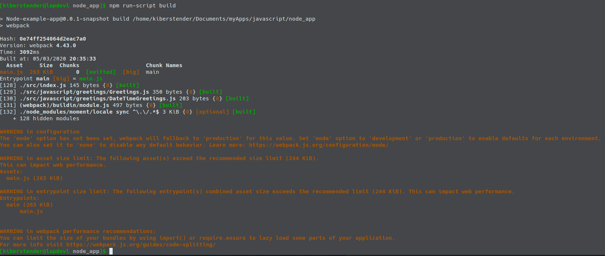
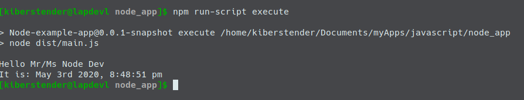
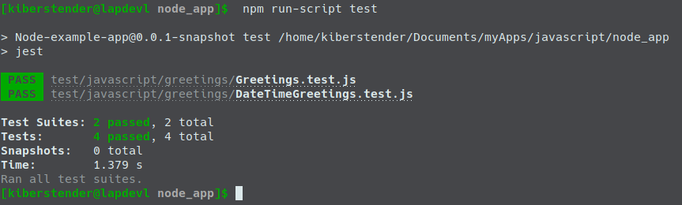

Introduction
When studying frontend development, you might notice that Node and NPM usually are not enough and you will see people using other applications to deal with your Javascript, HTML, CSS files to make it easier for you to split them in various parts, allowing you to focus on how these individual pieces will create your whole application. They are called task runners, for they do exactly what the title suggests: run tasks ... over your files, transforming them from one language to another (Typescript -> Javascript), checking if your syntax is correct(Applying JSLint) or even making your production code ugly so it will be hard for people to copy what you have done(Uglifying your code). The most famous ones you will find in the market are: Grunt, Gulp and Webppack.
This post will focus on introducing Webpack. I will continue the development of a simple Javascript project I started on another post (NodeJS- A very simple introduction), so if you did not read it, please consider doing it before starting this post or if you prefer you can clone the project and go to the branch specific for the post:
git clone https://bitbucket.org/kiberStender/node_app.git cd node_app/ git checkout --track origin/nodejs_introduction
I won't be explaining what is already explained in the other post and I will assume you are already familiarized with Javascript and NodeJS.
Webpack
This application is, as the name suggests, focused on packing things or as they claim in their web page: to bundle things. As your frontend is growing you will see yourself with the decision of having huge files to easy manage scope in your HTML pages(which is bad, for being hard not to couple things as they are in the same file) or a lot of small files and problems to add them in the correct order or even to remember to add them in your HTML page. So Webpack comes to help us offering solutions to manage your project, allowing you to keep using small decoupled files and packing them in a single file in the end making it easier to include in your HTML page. And this is not the only possibility, as Webpack can help you producing small bundles, in case your "single file" is bigger than 244 Kib, making it easier for browsers to download them in parallel chuncks speeding the loading of your page. These feature are the ones Webpack does "for free" to you, but there are other features you can add, extending Webpack functionalities using Loaders and Plugins.
How does it work?
While NPM is like Maven for Node, you can list and download your dependencies, Webpack is where you tell what to do with these dependencies. When you are listing devDependencies in your package.json, these are (mostly) CLI(Command Line Interface) applications, that means, applications that run in your terminal/prompt cmd and these in particular, you use to do some transformation in your code, like writing everything in Typescript and then converting to Javascript. While you could do it manually by installing Typescript compiler like you would do with Java compiler, Webpack lets you create functions to act on your code, like you would do in automated way. Webpack also has a production/development mode where it does some default things for you, like uglify your code automatically when in Prod mode or minify it removing unnecessary blank spaces.
Installing and configuring
To guarantee that this post will not fail in the future, install everything in the same version I will put here:
npm install --save-dev webpack@4.43.0 webpack-cli@3.3.11
Check your package.json file. NPM added new devDependency for you and it should contain new libraries:
Explaning the libs we just installed we have:
Webpack: API to use inside your Node application to help customising builds. So if you want to create your own way of building or bundling your application, you can use this library to speed up your process allowing you to focus on things that Webpack might not haveWebpack-cli: CLI app that does the same thing Webpack does but you don't need to import Webpack in your application, you can 'pass' your application as a parameter to Webpack-Cli and the rest is Webpack lib work
Webpack has a default behaviour that, when you run it, it will look for a file named index.js in the /src directory and create a new file named main.js and put it inside a directory named dist in the root of your application. For this reason, we're going to change our /src/app.js to /src/index.js. Now add a new scripts command named build in your package.json:
... "scripts": { ... "build": "webpack", ... } ...
PS: Whenever you see three dots ... it means "keep whatever comes before this" or if it comes after what we are adding/modifying, it means "keep whatever comes after these dots"
Now execute your script and you should see something similar to this:
The warnings
We have 2(two) main warnings in this message:
WARNING in configuration: This warning is here because, as I mentioned in the beginning, Webpack has support for production and development environments, so when you don't specify which environment you are using, it fallbacks to production and emit this warning to let you know that you need to specify the missing info. You can modify yourscriptssection inpackage.json, editingbuildand adding the newbuild:prod:... "scripts": { ... "build": "webpack --mode development", "build:prod": "webpack --mode production", ... } ...
WARNING in asset/entrypoint/webpack performance: This warnings are here because Webpack is mostly focused in improve frontend application. So In order to make frontend load faster, your files must have to be smaller than 244 Kbit. So it points to you to two possible solutions: by usingimport/exportsyntax or using some hints from https://webpack.js.org/guides/code-splitting/. This is solely for app performance, for the smaller your bundles the faster they are downloaded and by using lazy loading the files will not be loaded to the memory unless needed. This is a very advanced topic so it must be covered in a dedicated post
After modifying build and adding build:prod, if you run the build command, you won't see any warning:
But, if you run build:prod you might notice the problem with big file because of the way we are bundling momentjs:
As we have a CLI app for now, we won't 'fix' this problem as it does not bother us, unless it was a library, then we would have to find a way to decrease size to not affect our users app performance. And even worst if this was a frontend. Of course the sugested limit is 244 Kib and we have 263 Kib, so it will not affect that much, but if it was a serious frontend app or a library we would have to improve it.
If you check the root of your app directory you might notice, as I previously said, a new directory named dist. This directory contains one file named main.js. To run the app now, you can edit execute command in scripts:
... "scripts": { ... "execute": "node dist/main.js", ... } ...
Now you can run your "Hello, Mr/Ms Node Dev" app again:
Let's not forget to add /dist to .gitignore or any other ignore file you have:
...
dist/
...
Customised build configuration
I said earlier that Webpack behaviour is to look for a file named "index.js" inside /src and this triggers Webpack default configuration to process your project. But there are things that this default configuration does not do for you, like processing HTML files, CSS files or transpilers like Typescript, Coffeescript, etc. To have that you have to configure Webpack by yourself and in order to do so you have to create a file named webpack.config.js inside the root of your application.
In webpack.config.js file you specify all the things you want to build in your application, like, compiling Typescript to Javascript(I know, I'm very obsessed with Typescript), SASS to CSS, copy the files from one directory to another (Imagine you are working with Spring for example, after the whole process you copy from /dist to /src/main/resources/static/) and other sort of nice things we will see. Create the file webpack.config.js and copy the below example, that has the same default configuration you have when you do not have the file:
const path = require("path"); module.exports = { entry: "./src/index.js", //1 output: { //2 filename: "main.js", path: path.resolve(__dirname, "dist") }, devtool: "source-map" //3 };
entry: This is where you tell Webpack which is your "main" file. The one who starts your whole application. Webpack is meant to be used with SPA(Single Page Application). But it does not prevent you from making a normal MPA(Multiple Page Application), it is just more focused for SPA. By default Webpack looks for/src/index.js, but here you can change it to whatever you like and wherever you want to put this file. It can be/src/app.jsor/myapp/src/my_main_file.js, you decideoutput: Here you define your bundle options. Usually we only have one file,main.jsand we are telling Webpack we want to store it in the root of our application in a directory nameddist, which will be created in case it does not exist. If you don't like this location you are free here to say where you want this directory and which name you want. So you can ignore this directory in your.gitignore,.dockerignoreor any ignore file you might be using. There are other options here to configure your app to have more bundle files if needed to speed download or similar problemsdevtool: This field controls how process source mapping to better debug your application. I'm usingsource-mapvalue that means, create the "'my_js_filename'.js.map" file, helping browsers to debug your app. You can find more info here
As you can see, this is a veeeeery simple config.
Plugins
A plugin is an extension made specifically for Webpack. Because of that, it can modify the files adding and removing things instead of simply reading your file and creating a new modified one. Aside from the fact some of them can allow you to choose in which phase of the building lifecycle you want to execute it. To add a plugin you have to first use NPM to install it(or code your own =D), import in your webpack.config.js, then instance it and write a plugin field to let Webpack know that you will use it as you will see bellow:
const path = require("path"); const MyPlugin = require("myPlugin"); module.exports = { entry: ..., output: ..., devtool: ..., plugins: [ new MyPlugin(params_if_it_has_any, ...) ] };
Auto deleting self generated files to avoid old cache
One of the annoyest problems in development world is old caches. You are coding like a locomotive, completely excited with a lot of ideas in your mind and then you run you new code and Boom... nothing changed in your app. You recompile, you refresh your browser, open it in Incognito and nothing, old page is static in front of you. You delete part of you code to force an error and nothing. Then you remember about the cache, delete it and your application is running your new code. The code you changed 1000 times trying to find what was wrong after 3 days of debug.
One way to prevent cache is not having old files and to delete them you can add an webpack plugin: Clean Webpack plugin. This plugin deletes everything in your output.path property in our webpack.config.js. It deletes the content, not the directory. In order to use it first install it:
npm install -save-dev clean-webpack-plugin@3.0.0
Now we import it in our webpack.config.js file and add it to the plugins property array:
const path = require("path"); const { CleanWebpackPlugin } = require("clean-webpack-plugin"); module.exports = { entry: ..., output: ..., devtool: ..., plugins: [ new CleanWebpackPlugin() ] };
Now our problem is solved. Whenever you execute build or build:prod, before it starts compiling the application it will delete /dist contents so you will always have the newest versions of the files you are generating.
Loaders
Loaders are apps that were not made specifically for Webpack to do transformation, validation or modification in some files in your project. Like for example, Typescript(told ya), Coffeescript and SASS transpilers. They were created for you to use whenever you like in whatever way you want, platform indepent. So to use them in Webpack you will need to find or create a loader, a small extension for Webpack that teaches how to execute these CLI applications giving your files as input. Then after this loader is created and imported in your project, you can go to your webpack.config.js and tell which files you want to apply these loaders and which parameter you want to provide. Usually you specify the files by using a regexp to fetch them by their file extension like /\.(js|jsx)$/ or /\.ts$/. To add loaders you have to add a new property named module and a array of rules like bellow example:
module.exports = { entry: ..., output: ..., devtool: ..., plugins: ..., module: { rules: [ { test: /\.ts$/ use: { loader: "typescript-loader" } } ] } };
Babel
Nowadays we have at least 3(three) major versions of Javascript: ES5, ES6 and ES2018. Both of them have differences and some browsers have partially implemented them. So let's say you want to use all new syntax from ES2018 but you are affraid that not all your users use updated browsers or even that browsers does not have a good and stable implementation of some features you are interested in(like import/export).
A good solution we have today is to use Babel. Babel is a transpiler from Javascript to Javascript, so you can code in ES2018 and compile (or in this case transpile) to an older version of Javascript that browsers and even NodeJS have already mastered. In order to do that, you have to specify a loader in your Webpack config. So first thing is add Babel:
npm install --save-dev babel-loader@8.1.0 @babel/core@7.9.0 @babel/preset-env@7.9.0
Now change your webpack config file to add the loader:
... module: { rules: [ { test: /\.(js|jsx)$/, exclude: /node_modules/, // We don't want babel to try to transpile all js file, only the ones in our project use: ["babel-loader"] } ] } ...
The next step is to create a configuration file for Babel in the root of your project named babel.config.js:
module.exports = { presets: [ [ "@babel/preset-env", { targets: { node: "current", } } ] ] };
Now we can change our require/module.export statements in our app to import/export. Let's first start with /src/javascript/greetings/DateTimeGreeting.js:
import moment from "moment"; export default class DateTimeGreetings { greetDateTime(dateFormat){ return `It is: ${moment().format(dateFormat)}`; } }
Yes, you have to remove module.exports.DateTimeGreetings = DateTimeGreetings;. Now update /src/javascript/greetings/Greeting.js:
import DateTimeGreetings from "./DateTimeGreetings.js"; export default class Greetings { ...// Keep constructor as it is greet(){ return `Hello Mr/Ms ${this.name}\n${this.dateTimeGreeter.greetDateTime("MMMM Do YYYY, h:mm:ss a")}`; } }
Yes, you have to remove module.exports.Greetings = Greetings;. Now the last change is in /src/index.js:
import Greetings from "./javascript/greetings/Greetings.js"; ...
The reason I was not using import/export before, is because the Node version I'm using in this project(Node v12.14.1) does not support such statements. Instead of waiting for Node to add this functionality, Babel helps us converting import/export to the old syntax we were using earlier require/module.exports. But not only import/export is added. What tells Babel which JS version we are using and to which version we want it to be compiled, is that preset. By using @babel/preset, we are delegating to whoever created this preset to select which JS versions we want to go from and which one to go to. With this preset we have import/export, const, let, object destructuring and many other nice things. You can create your own preset if you want, just follow this link.
Import path resolution
You might or might not have noticed a difference when importing momentjs and when importing our Greetings.js/DateTimeGreetings files. If you haven't noticed, we are using relative import, that means we, as the developers, should know where the file we want to import is in relation to the file importing it and pass the correct path. So instead of simply use:
import Greetings from "greetings/Greetings";
We have to use:
import Greetings from "./javascript/greetings/Greetings";
Now imagine our Greeting class receives an instance of another class. Let's create a Person class to better ilustrate. Go to /src/javascript and create a new directory/package named person and inside it create a new file named Person.js and put the following content:
export default class Person { constructor(name, surname){ this.name = name; this.surname = surname; } }
Now we import it in both /src/index.js and in /src/javascript/greetings/Greeting.js. First in /src/javascript/greetings/Greeting.js:
import DateTimeGreetings from "./DateTimeGreetings.js"; import Person from "../person/Person.js"; export default class Greetings { constructor(person = new Person("Unnamed", "Person")){ this.person = person; this.dateTimeGreeter = new DateTimeGreetings(); } greet(){ const {name, surname} = this.person; return `Hello Mr/Ms ${name} ${surname}\n${this.dateTimeGreeter.greetDateTime("MMMM Do YYYY, h:mm:ss a")}`; } }
Now in /src/index.js:
import Person from "./javascript/person/Person.js"; import Greetings from "./javascript/greetings/Greetings.js"; const p = new Person("Node", "Dev"); let greetDev = new Greetings(p); console.log(greetDev.greet());
Do you see the difference? The more files you have, the worst it will be if for example in the future we change /src/javascript/person to something like /src/javascript/models/person, because then we will have to change everywhere else that is importing Person class and whatever Person class import(In case it imports something in the future). So to improve it and make Webpack work for us instead, let's add module resolution:
... module.exports = { entry: ..., output: {...}, devtool: ..., plugins: [...], module:{...}, resolve: { modules: [path.resolve(__dirname, "src/javascript"), "node_modules"] } }
Now we are saying: for whatever module I'm importing, first, look for it in /src/javascript then if you cannot find it, look inside node_modules. Then change our /src/index.js file to this:
import Person from "person/Person"; import Greetings from "greetings/Greetings"; ...
And your /src/javascript/greetings/Greetings.js to:
import DateTimeGreetings from "greetings/DateTimeGreetings"; import Person from "person/Person"; export default class Greetings { ...
Do you see how things are more normalized now? It is because everything is using /src/javascript as a reference instead of the file you are importing to.
Testing in Javascript with Webpack
If you have tried to run our old tests, you have seen that we have a problem now. We changed old require/module.exports syntax in our Greeting.js/DateTimeGreetings.js files to use import/export syntax byt not in the tests:
To fix that, we have to do 3(three) things:
-
Change all
requiretoimport. Let's start with/test/javascript/greetings/DateTimeGreetings.jsimport sinon from "sinon"; import DateTimeGreetings from "greetings/DateTimeGreetings"; ...
Now, change
/test/javascript/greetings/Greetings.js:import sinon from "sinon"; import Greetings from "greetings/Greetings"; import DateTimeGreetings from "greetings/DateTimeGreetings"; ...
-
If you run the tests now, you'll see that they cannot find the modules
greetings/Greetings.jsandgreetings/DateTimeGreetings.js. This is due to the fact that Jest does not know about our Path Resolution in Wepback. So to fix that, we're going to create a new file in the root of our project, namedjest.config.jsand in this file we will configure the modules resolution as we did in Webpack:module.exports = { "moduleDirectories":["src/javascript", "node_modules"] }
-
The last change is to fix
/test/javascript/greetings/Greetings.js, because we added a new classPersonto substitute the simpleStringwe had in the first parameter inGreetingsconstructor:import sinon from "sinon"; import Greetings from "greetings/Greetings"; import DateTimeGreetings from "greetings/DateTimeGreetings"; import Person from "person/Person"; const person = new Person("NodeJS", "Dev"); const greetDev = new Greetings(person); ... test(`should return "Hello Mr/Ms NodeJS Dev\\nIt is: April 30rd 2020, 10:20:00 pm"`, function() { //GIVEN const expected = "Hello Mr/Ms NodeJS Dev\nIt is: April 30rd 2020, 10:20:00 pm"; //WHEN const actual = greetDev.greet(); //THEN expect(actual).toEqual(expected); }); test(`should not return "Hello Mr/Ms NodeJS Dev \\nIt is: April 30rd 2020, 10:20:00 pm"`, function() { //GIVEN const expected = "Hello Mr/Ms NodeJS Dev \nIt is: April 30rd 2020, 10:20:00 pm"; //WHEN const actual = greetDev.greet(); //THEN expect(actual).not.toEqual(expected); }); ...
Yes, we don't need to give the full path to the classes we are importing anymore. Now you can run it again and see your tests working as they should:
And here we finish Webpack basic tutorial, I hope you have learned and understood well everything I taught ^^
Conclusion
In this post we learned how Webpack works and how it can helps us improve productivity. We learned what Plugins and Loaders are, added Babel, Path resolution and improved our tests suite. If something was not very clear or you prefer reading the code, please refer to this bitbucket repo and checkout branch webpack_introduction. If you for some reason speaks portuguese and feel that you would understand this post better in this language feel free to go the Brazilian Portuguese version of this page